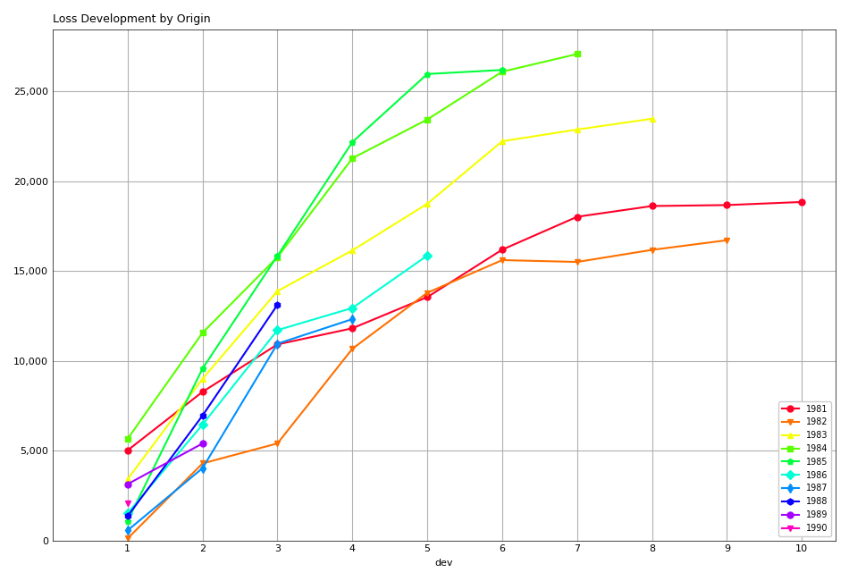
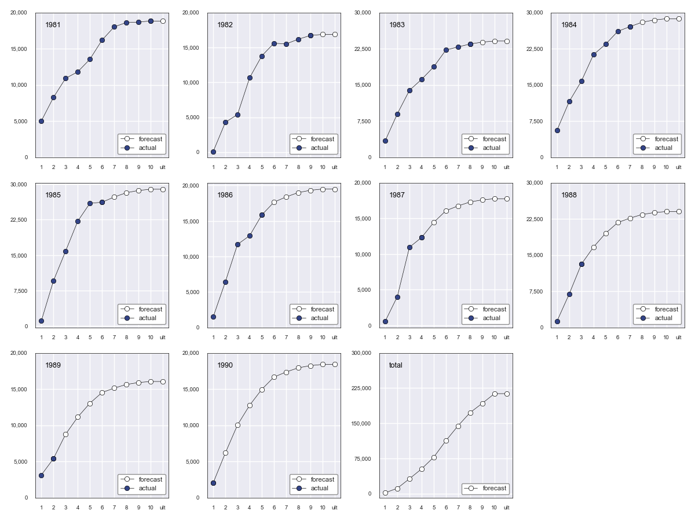
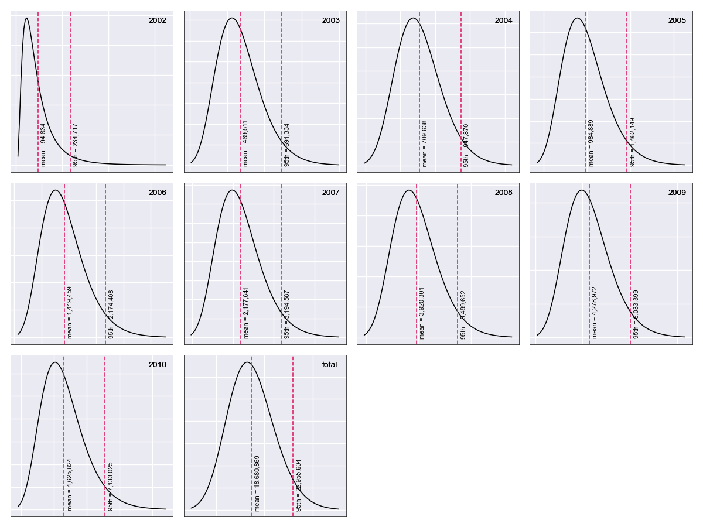
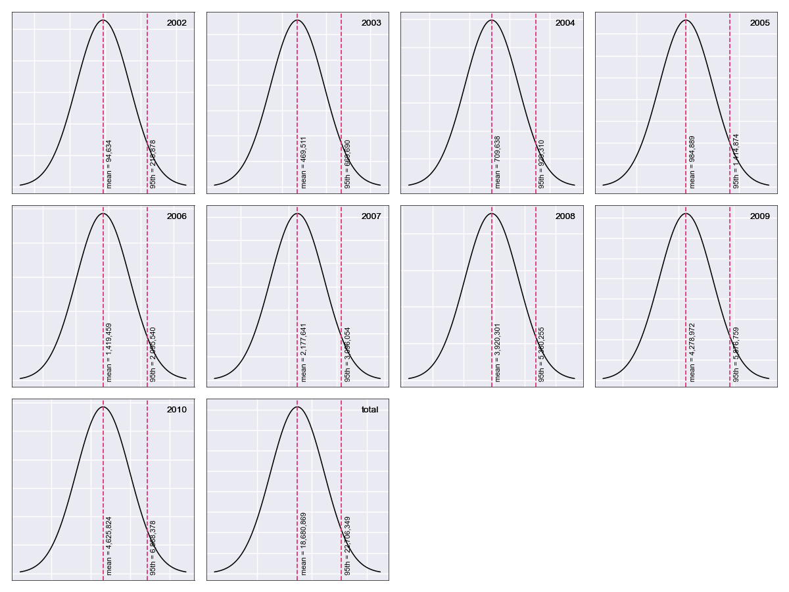
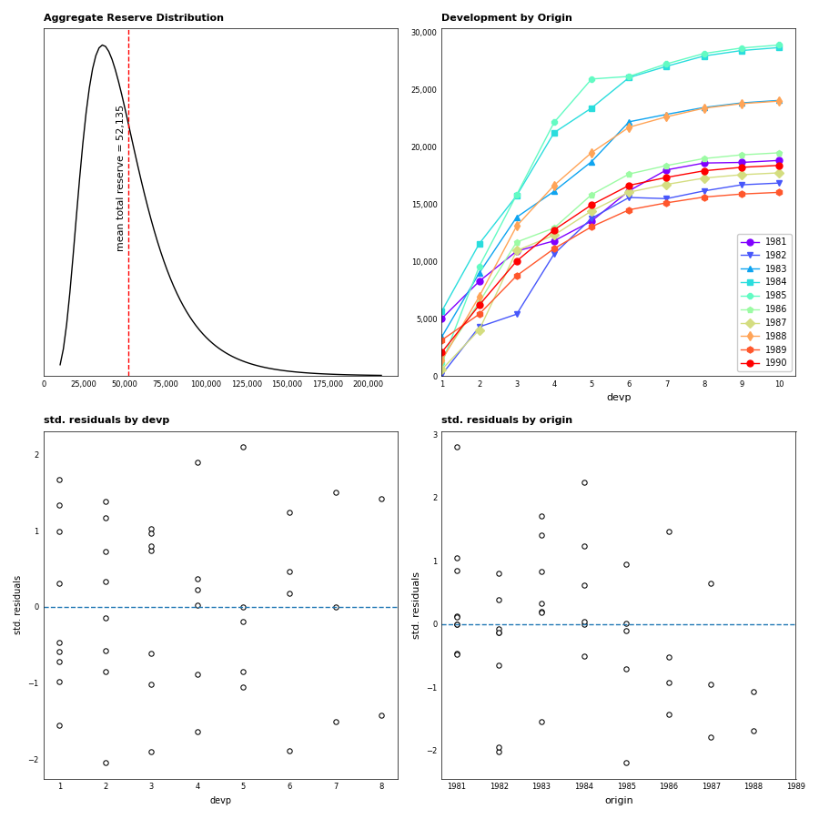
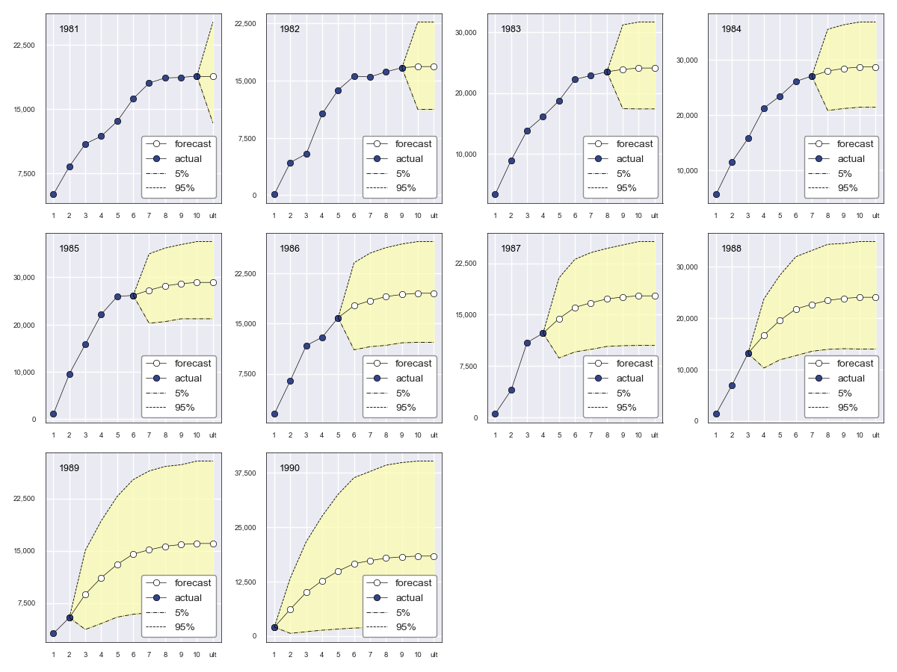
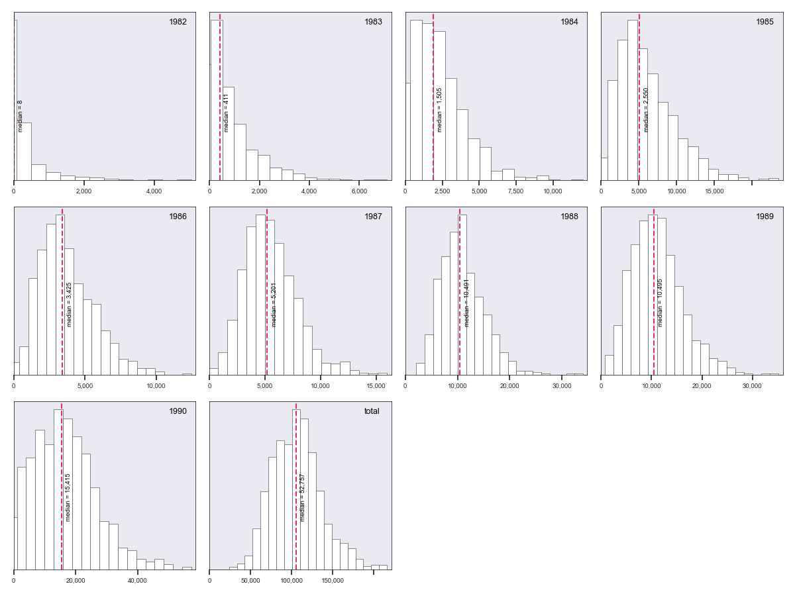

trikit Quickstart Guide¶
- Release
0.3.2
trikit is a collection of Loss Reserving utilities developed to facilitate Actuarial analysis in Python, with particular emphasis on automating the basic techniques generally used for estimating unpaid claim liabilities. trikit’s core data structure is the triangle, which comes in both incremental and cumulative variants. trikit’s triangle objects inherit directly from Pandas DataFrame, so all of the familiar methods and attributes used when working in Pandas can be be applied to trikit triangle objects.
Along with the core IncrTriangle and CumTriangle data structures,
trikit exposes a number of common methods for estimating unpaid claim liabilities,
as well as techniques to quantify variability around those estimates.
Currently available reserve estimators are BaseChainLadder, MackChainLadder
and BootstrapChainLadder. Refer to the examples below for sample use cases.
Finally, in addition to the library’s core Chain Ladder functionality, trikit
exposes a convenient interface that links to the Casualty Actuarial Society’s
Schedule P Loss Rerserving Database. The database contains information on
losses across a number of lines of business for all property-casualty insurers
that write business in the U.S. More information related to the the Schedule P
Loss Reserving Database can be found here.
Quickstart¶
We begin by loading the RAA sample dataset, which represents Automatic Factultative business in General Liability provided by the Reinsurance Association of America. Sample datasets are loaded as DataFrame objects, and always represent incremental losses. Sample datasets can be loaded as follows:
In [1]: import trikit
In [2]: raa = trikit.load("raa")
In [3]: raa.head()
Out[3]:
origin dev value
0 1981 1 5012
1 1981 2 3257
2 1981 3 2638
3 1981 4 898
4 1981 5 1734
A list of available datasets can be obtained by calling get_datasets:
In [4]: trikit.get_datasets()
Out[4]: ['amw09', 'autoliab', 'glre', 'raa', 'singinjury', 'singproperty', 'ta83']
Any of the datasets listed above can be read in the same way using
trikit.load. Note that sample datasets can be returned as triangle objects directly. For
example, the RAA dataset can be returned as a cumulative triangle as follows:
In [5]: tri = trikit.load("raa", tri_type="cum")
In [6]: tri
Out[6]:
1 2 3 4 5 6 7 8 9 10
1981 5,012 8,269 10,907 11,805 13,539 16,181 18,009 18,608 18,662 18,834
1982 106 4,285 5,396 10,666 13,782 15,599 15,496 16,169 16,704 nan
1983 3,410 8,992 13,873 16,141 18,735 22,214 22,863 23,466 nan nan
1984 5,655 11,555 15,766 21,266 23,425 26,083 27,067 nan nan nan
1985 1,092 9,565 15,836 22,169 25,955 26,180 nan nan nan nan
1986 1,513 6,445 11,702 12,935 15,852 nan nan nan nan nan
1987 557 4,020 10,946 12,314 nan nan nan nan nan nan
1988 1,351 6,947 13,112 nan nan nan nan nan nan nan
1989 3,133 5,395 nan nan nan nan nan nan nan nan
1990 2,063 nan nan nan nan nan nan nan nan nan
Working with Triangles¶
Triangles are created by calling the totri function. Available arguments
are:
data: The dataset to transform into a triangle instance.tri_type: {“cum”, “incr”} Specifies the type of triangle to create.data_format: {“cum”, “incr”} Specifies how losses are represented with the input datasetdata.data_shape: {“tabular”, “triangle”} Specifies whether input datasetdatarepresents tabular loss data with columns “origin”, “dev” and “value”, or data already structured as a loss triangle with columns corresponding to development periods.origin: The column name indatacorresponding to accident year. Ignored ifdata_shape="triangle".dev: The column name indatacorresponding to development period. Ignored ifdata_shape="triangle".value: The column name indatacorresponding to the measure of interest. Ignored ifdata_shape="triangle".
Next we demonstrate how to create triangles using totri and various
combinations of the arguments listed above.
Example 1: Create a cumulative loss triangle from tabular incremental data¶
Referring again to the RAA dataset, let’s create a cumulative loss triangle.
We mentioned above that trikit sample datasets are Pandas DataFrames which
reflect incremental losses, so data_format="incr" and data_shape="tabular",
both of which are defaults. Also, the default for tri_type is "cum", so the
only argument required to pass into totri is the input dataset data:
In [1]: import pandas as pd
In [2]: from trikit import load, totri
In [3]: raa = load("raa")
In [4]: tri = totri(raa)
In [5]: tri
Out[5]:
1 2 3 4 5 6 7 8 9 10
1981 5,012 8,269 10,907 11,805 13,539 16,181 18,009 18,608 18,662 18,834
1982 106 4,285 5,396 10,666 13,782 15,599 15,496 16,169 16,704 nan
1983 3,410 8,992 13,873 16,141 18,735 22,214 22,863 23,466 nan nan
1984 5,655 11,555 15,766 21,266 23,425 26,083 27,067 nan nan nan
1985 1,092 9,565 15,836 22,169 25,955 26,180 nan nan nan nan
1986 1,513 6,445 11,702 12,935 15,852 nan nan nan nan nan
1987 557 4,020 10,946 12,314 nan nan nan nan nan nan
1988 1,351 6,947 13,112 nan nan nan nan nan nan nan
1989 3,133 5,395 nan nan nan nan nan nan nan nan
1990 2,063 nan nan nan nan nan nan nan nan nan
tri is an instance of trikit.triangle.CumTriangle, which inherits from pandas.DataFrame:
In [6]: type(tri)
Out[6]: trikit.triangle.CumTriangle
In [7]: isinstance(tri, pd.DataFrame)
Out[7]: True
This means that all of the functionality exposed by DataFrame objects gets inherited
by triangle objects. For example, to access the first column of tri:
In [8]: tri.loc[:,1]
Out[8]:
1981 5012.00000
1982 106.00000
1983 3410.00000
1984 5655.00000
1985 1092.00000
1986 1513.00000
1987 557.00000
1988 1351.00000
1989 3133.00000
1990 2063.00000
Name: 1, dtype: float64
Triangle objects offer a number of methods useful in Actuarial reserving
contexts. To extract the latest diagonal, call tri.latest:
In [9]: tri.latest
Out[9]:
origin dev latest
0 1981 10 18834.00000
1 1982 9 16704.00000
2 1983 8 23466.00000
3 1984 7 27067.00000
4 1985 6 26180.00000
5 1986 5 15852.00000
6 1987 4 12314.00000
7 1988 3 13112.00000
8 1989 2 5395.00000
9 1990 1 2063.00000
Calling tri.a2a produces a DataFrame of age-to-age factors:
In[10]: tri.a2a
Out[10]:
1 2 3 4 5 6 7 8 9
1981 1.64984 1.31902 1.08233 1.14689 1.19514 1.11297 1.03326 1.00290 1.00922
1982 40.42453 1.25928 1.97665 1.29214 1.13184 0.99340 1.04343 1.03309 nan
1983 2.63695 1.54282 1.16348 1.16071 1.18570 1.02922 1.02637 nan nan
1984 2.04332 1.36443 1.34885 1.10152 1.11347 1.03773 nan nan nan
1985 8.75916 1.65562 1.39991 1.17078 1.00867 nan nan nan nan
1986 4.25975 1.81567 1.10537 1.22551 nan nan nan nan nan
1987 7.21724 2.72289 1.12498 nan nan nan nan nan nan
1988 5.14212 1.88743 nan nan nan nan nan nan nan
1989 1.72199 nan nan nan nan nan nan nan nan
Calling tri.a2a_avgs produces a table of candidate loss development factors,
which contains arithmetic, geometric and weighted age-to-age averages for a
number of different periods:
In[11]: tri.a2a_avgs()
Out[11]:
1 2 3 4 5 6 7 8 9
simple-1 1.72199 1.88743 1.12498 1.22551 1.00867 1.03773 1.02637 1.03309 1.00922
simple-2 3.43205 2.30516 1.11517 1.19815 1.06107 1.03347 1.03490 1.01799 1.00922
simple-3 4.69378 2.14200 1.21009 1.16594 1.10261 1.02011 1.03436 1.01799 1.00922
simple-4 4.58527 2.02040 1.24478 1.16463 1.10992 1.04333 1.03436 1.01799 1.00922
simple-5 5.42005 1.88921 1.22852 1.19013 1.12696 1.04333 1.03436 1.01799 1.00922
simple-6 4.85726 1.83148 1.35321 1.18293 1.12696 1.04333 1.03436 1.01799 1.00922
simple-7 4.54007 1.74973 1.31451 1.18293 1.12696 1.04333 1.03436 1.01799 1.00922
simple-8 9.02563 1.69589 1.31451 1.18293 1.12696 1.04333 1.03436 1.01799 1.00922
all-simple 8.20610 1.69589 1.31451 1.18293 1.12696 1.04333 1.03436 1.01799 1.00922
geometric-1 1.72199 1.88743 1.12498 1.22551 1.00867 1.03773 1.02637 1.03309 1.00922
geometric-2 2.97568 2.26699 1.11513 1.19783 1.05977 1.03346 1.03487 1.01788 1.00922
geometric-3 3.99805 2.10529 1.20296 1.16483 1.10019 1.01993 1.03433 1.01788 1.00922
geometric-4 4.06193 1.98255 1.23788 1.16380 1.10802 1.04244 1.03433 1.01788 1.00922
geometric-5 4.73672 1.83980 1.22263 1.18840 1.12492 1.04244 1.03433 1.01788 1.00922
geometric-6 4.11738 1.78660 1.32455 1.18138 1.12492 1.04244 1.03433 1.01788 1.00922
geometric-7 3.86345 1.69952 1.28688 1.18138 1.12492 1.04244 1.03433 1.01788 1.00922
geometric-8 5.18125 1.64652 1.28688 1.18138 1.12492 1.04244 1.03433 1.01788 1.00922
all-geometric 4.56261 1.64652 1.28688 1.18138 1.12492 1.04244 1.03433 1.01788 1.00922
weighted-1 1.72199 1.88743 1.12498 1.22551 1.00867 1.03773 1.02637 1.03309 1.00922
weighted-2 2.75245 2.19367 1.11484 1.19095 1.05838 1.03381 1.03326 1.01694 1.00922
weighted-3 3.24578 2.05376 1.23215 1.15721 1.09340 1.02395 1.03326 1.01694 1.00922
weighted-4 3.47986 1.91259 1.26606 1.15799 1.09987 1.04193 1.03326 1.01694 1.00922
weighted-5 4.23385 1.74821 1.24517 1.17519 1.11338 1.04193 1.03326 1.01694 1.00922
weighted-6 3.30253 1.70935 1.29886 1.17167 1.11338 1.04193 1.03326 1.01694 1.00922
weighted-7 3.16672 1.67212 1.27089 1.17167 1.11338 1.04193 1.03326 1.01694 1.00922
weighted-8 3.40156 1.62352 1.27089 1.17167 1.11338 1.04193 1.03326 1.01694 1.00922
all-weighted 2.99936 1.62352 1.27089 1.17167 1.11338 1.04193 1.03326 1.01694 1.00922
We can obtain a reference to an incremental representation of the cumulative triangle
by calling tri.to_incr:
In[12]: tri.to_incr()
Out[12]:
1 2 3 4 5 6 7 8 9 10
1981 5,012 3,257 2,638 898 1,734 2,642 1,828 599 54 172
1982 106 4,179 1,111 5,270 3,116 1,817 -103 673 535 nan
1983 3,410 5,582 4,881 2,268 2,594 3,479 649 603 nan nan
1984 5,655 5,900 4,211 5,500 2,159 2,658 984 nan nan nan
1985 1,092 8,473 6,271 6,333 3,786 225 nan nan nan nan
1986 1,513 4,932 5,257 1,233 2,917 nan nan nan nan nan
1987 557 3,463 6,926 1,368 nan nan nan nan nan nan
1988 1,351 5,596 6,165 nan nan nan nan nan nan nan
1989 3,133 2,262 nan nan nan nan nan nan nan nan
1990 2,063 nan nan nan nan nan nan nan nan nan
Example 2: Create an incremental loss triangle from tabular incremental data¶
The call to totri is identical to Example #1, but we change tri_type from
“cum” to “incr”:
In [1]: import pandas as pd
In [2]: from trikit import load, totri
In [3]: raa = load("raa")
In [4]: tri = totri(raa, tri_type="incr")
In [5]: type(tri)
Out[5]: trikit.triangle.IncrTriangle
In [6]: tri
Out[6]:
1 2 3 4 5 6 7 8 9 10
1981 5,012 3,257 2,638 898 1,734 2,642 1,828 599 54 172
1982 106 4,179 1,111 5,270 3,116 1,817 -103 673 535 nan
1983 3,410 5,582 4,881 2,268 2,594 3,479 649 603 nan nan
1984 5,655 5,900 4,211 5,500 2,159 2,658 984 nan nan nan
1985 1,092 8,473 6,271 6,333 3,786 225 nan nan nan nan
1986 1,513 4,932 5,257 1,233 2,917 nan nan nan nan nan
1987 557 3,463 6,926 1,368 nan nan nan nan nan nan
1988 1,351 5,596 6,165 nan nan nan nan nan nan nan
1989 3,133 2,262 nan nan nan nan nan nan nan nan
1990 2,063 nan nan nan nan nan nan nan nan nan
tri now represents RAA losses in incremental format.
It is possible to obtain a cumulative representation of an incremental triangle
object by calling tri.to_cum:
In [7]: tri.to_cum()
Out[7]:
1 2 3 4 5 6 7 8 9 10
1981 5,012 8,269 10,907 11,805 13,539 16,181 18,009 18,608 18,662 18,834
1982 106 4,285 5,396 10,666 13,782 15,599 15,496 16,169 16,704 nan
1983 3,410 8,992 13,873 16,141 18,735 22,214 22,863 23,466 nan nan
1984 5,655 11,555 15,766 21,266 23,425 26,083 27,067 nan nan nan
1985 1,092 9,565 15,836 22,169 25,955 26,180 nan nan nan nan
1986 1,513 6,445 11,702 12,935 15,852 nan nan nan nan nan
1987 557 4,020 10,946 12,314 nan nan nan nan nan nan
1988 1,351 6,947 13,112 nan nan nan nan nan nan nan
1989 3,133 5,395 nan nan nan nan nan nan nan nan
1990 2,063 nan nan nan nan nan nan nan nan nan
Example 3: Create a cumulative loss triangle from data formatted as a triangle¶
There may be situations in which data is already formatted as a triangle,
and we’re interested in creating a triangle instance from this data.
In the next example, we create a DataFrame with the same shape as a triangle,
which we then pass into totri with data_shape="triangle" to obtain a
cumulative triangle instance:
In [1]: import pandas as pd
In [2]: from trikit import load, totri
In [3]: dftri = pd.DataFrame({
1:[1010, 1207, 1555, 1313, 1905],
2:[767, 1100, 1203, 900, np.NaN],
3:[444, 623, 841, np.NaN, np.NaN],
4:[239, 556, np.NaN, np.NaN, np.NaN],
5:[80, np.NaN, np.NaN, np.NaN, np.NaN],
}, index=list(range(1, 6))
)
In [4]: dftri
Out[4]:
1 2 3 4 5
1 1010. 767. 444. 239. 80.
2 1207. 1100. 623. 556. nan
3 1555. 1203. 841. nan nan
4 1313. 900. nan nan nan
5 1905. nan nan nan nan
In [5]: tri = totri(dftri, data_shape="triangle")
In [6]: type(tri)
Out[6]: trikit.triangle.CumTriangle
trikit cumulative triangle instances expose a plot method, which generates a faceted plot by origin representing the progression of cumulative losses to date by development period. The exhibit can be obtained as follows:
In [5]: tri.plot()
Which yields:
Reserve Estimators¶
trikit includes a number of reserve estimators. Let’s refer to the CAS Loss Reserving
Dastabase (lrdb) included with trikit, focusing on grcode=1767 and lob="comauto"
(grcode uniquely identifies each company in the database. To obtain a full list of
grcodes and associated companies, use trikit.get_lrdb_specs; to obtain a list
of availavble lines of business (lobs), use trikit.get_lrdb_lobs):
In [1]: from trikit import load_lrdb, totri
In [2]: df = load_lrdb(lob="comauto", grcode=1767)
In [3]: tri = totri(df)
In [4]: tri
1 2 3 4 5 6 7 8 9 10
1988 110,231 263,079 431,216 611,278 797,428 985,570 1,174,922 1,366,229 1,558,096 1,752,096
1989 121,678 279,896 456,640 644,767 837,733 1,033,837 1,233,015 1,432,670 1,633,619 nan
1990 123,376 298,615 500,570 714,683 934,671 1,157,979 1,383,820 1,610,193 nan nan
1991 117,457 280,058 463,396 662,003 865,401 1,071,271 1,278,228 nan nan nan
1992 124,611 291,399 481,170 682,203 889,029 1,101,390 nan nan nan nan
1993 137,902 323,854 533,211 753,639 980,180 nan nan nan nan nan
1994 150,582 345,110 561,315 792,392 nan nan nan nan nan nan
1995 150,511 345,241 560,278 nan nan nan nan nan nan nan
1996 142,301 326,584 nan nan nan nan nan nan nan nan
1997 143,970 nan nan nan nan nan nan nan nan nan
Similar to load, load_lrdb also accepts a tri_type argument, which returns the lrdb subset
as an incremental or cumulative triangle:
In [5]: tri = load_lrdb(tri_type="cum", lob="comauto", grcode=1767)
To obtain base chain ladder reserve estimates, call the cumulative triangle’s
base_cl method:
In [5]: result = tri.base_cl()
In [6]: result
Out[6]:
maturity cldf emergence latest ultimate reserve
1988 10 1.00000 1.00000 1,752,096 1,752,096 0
1989 9 1.12451 0.88928 1,633,619 1,837,022 203,403
1990 8 1.28233 0.77983 1,610,193 2,064,802 454,609
1991 7 1.49111 0.67064 1,278,228 1,905,977 627,749
1992 6 1.77936 0.56200 1,101,390 1,959,771 858,381
1993 5 2.20146 0.45425 980,180 2,157,822 1,177,642
1994 4 2.87017 0.34841 792,392 2,274,299 1,481,907
1995 3 4.07052 0.24567 560,278 2,280,624 1,720,346
1996 2 6.68757 0.14953 326,584 2,184,053 1,857,469
1997 1 15.62506 0.06400 143,970 2,249,541 2,105,571
total nan nan 10,178,930 20,666,007 10,487,077
The result is of type BaseChainLadderResult. The columns
of the result can be obtained in total or individually. The result above
can be returned as a DataFrame by calling result.summary:
In [7]: result.summary
Out[7]:
maturity cldf emergence latest ultimate reserve
1988 10 1.000000 1.000000 1752096.0 1.752096e+06 0.000000e+00
1989 9 1.124511 0.889275 1633619.0 1.837022e+06 2.034034e+05
1990 8 1.282332 0.779829 1610193.0 2.064802e+06 4.546094e+05
1991 7 1.491108 0.670642 1278228.0 1.905977e+06 6.277486e+05
1992 6 1.779362 0.561999 1101390.0 1.959771e+06 8.583811e+05
1993 5 2.201455 0.454245 980180.0 2.157822e+06 1.177642e+06
1994 4 2.870169 0.348412 792392.0 2.274299e+06 1.481907e+06
1995 3 4.070523 0.245669 560278.0 2.280624e+06 1.720346e+06
1996 2 6.687568 0.149531 326584.0 2.184053e+06 1.857469e+06
1997 1 15.625064 0.064000 143970.0 2.249541e+06 2.105571e+06
total NaN NaN 10178930.0 2.066601e+07 1.048708e+07
To access the reserve estimates as a Series, call result.reserve:
In [8]: result.reserve
Out[8]:
1988 0.0
1989 203403.0
1990 454609.0
1991 627749.0
1992 858381.0
1993 1177642.0
1994 1481907.0
1995 1720346.0
1996 1857469.0
1997 2105571.0
total 10487077.0
Name: reserve, dtype: float64
base_cl accepts two optional arguments:
tail: The tail factor, which defaults to 1.0.sel: Loss development factors, which defaults to “all-weighted”.selcan be either a string corresponding to a pre-computed pattern available intri.a2a_avgs().index, or a custom set of loss development factors as a numpy array or Pandas Series.
Example #2 demonstrated how to access a number of candidate loss development patterns
by calling tri.a2a_avgs. Available pre-computed options for sel can be any
value present in tri.a2a_avgs’s index. To obtain a list of available pre-computed
loss development factors by name, run:
In [9]: tri.a2a_avgs().index.tolist()
Out[9]:
['simple-1', 'simple-2', 'simple-3', 'simple-4', 'simple-5', 'simple-6', 'simple-7',
'simple-8', 'all-simple', 'geometric-1', 'geometric-2', 'geometric-3', 'geometric-4',
'geometric-5', 'geometric-6', 'geometric-7', 'geometric-8', 'all-geometric',
'weighted-1', 'weighted-2', 'weighted-3', 'weighted-4', 'weighted-5', 'weighted-6',
'weighted-7', 'weighted-8', 'all-weighted']
If instead of all-weighted, a 5-year geometric loss development pattern is
preferred, along with a tail factor of 1.015, the call to base_cl would be modified
as follows:
In[10]: tri.base_cl(sel="geometric-5", tail=1.015)
Out[10]:
maturity cldf emergence latest ultimate reserve
1988 10 1.01500 0.98522 1,752,096 1,778,377 26,281
1989 9 1.14138 0.87613 1,633,619 1,864,578 230,959
1990 8 1.30157 0.76830 1,610,193 2,095,778 485,585
1991 7 1.51344 0.66075 1,278,228 1,934,517 656,289
1992 6 1.80591 0.55374 1,101,390 1,989,009 887,619
1993 5 2.23416 0.44760 980,180 2,189,878 1,209,698
1994 4 2.91249 0.34335 792,392 2,307,832 1,515,440
1995 3 4.13521 0.24183 560,278 2,316,869 1,756,591
1996 2 6.78292 0.14743 326,584 2,215,194 1,888,610
1997 1 15.69149 0.06373 143,970 2,259,103 2,115,133
total nan nan 10,178,930 20,951,135 10,772,205
If sel is a Series or numpy ndarray, a check will first be made to ensure the LDFs
have the requiste number of elements. The provided LDFs should not include a tail factor.
Next, reserves are estimated with the chain ladder along with an external set of LDFs
using the same loss reserve database subset (grcode=1767 and lob="commauto"):
In[11]: tri = load_lrdb(tri_type="cum", lob="commauto", grcode=1767)
In[12]: ldfs = np.asarray([2.75, 1.55, 1.50, 1.25, 1.15, 1.075, 1.03, 1.02, 1.01])
In[13]: cl = tri.base_cl(sel=ldfs)
In[14]: cl
Out[14]:
maturity cldf emergence latest ultimate reserve
1988 10 1.00000 1.00000 1,752,096 1,752,096 0
1989 9 1.01000 0.99010 1,633,619 1,649,955 16,336
1990 8 1.03020 0.97069 1,610,193 1,658,821 48,628
1991 7 1.06111 0.94241 1,278,228 1,356,335 78,107
1992 6 1.14069 0.87666 1,101,390 1,256,343 154,953
1993 5 1.31179 0.76232 980,180 1,285,793 305,613
1994 4 1.63974 0.60985 792,392 1,299,317 506,925
1995 3 2.45961 0.40657 560,278 1,378,066 817,788
1996 2 3.81240 0.26230 326,584 1,245,068 918,484
1997 1 10.48409 0.09538 143,970 1,509,394 1,365,424
total nan nan 10,178,930 14,391,188 4,212,258
If ldfs is not of the correct length (length n-1 for a triangle
having n development periods), ValueError is raised:
In[15]: ldfs = np.asarray([2.75, 1.55, 1.50, 1.25, 1.15, 1.075, 1.03])
In[16]: result = tri._base_cl(sel=ldfs)
Traceback (most recent call last):
File "trikit\chainladder\base.py", line 117, in __call__
ValueError: sel has 7 values, LDF overrides require 9.
A faceted plot by origin combining actuals and forcasts can be obtained by calling
result’s plot method:
In [17]: result = tri.base_cl(sel="geometric-5", tail=1.015)
In [18]: result.plot()
Which produces the following:
Quantifying Reserve Variability¶
The Base Chain Ladder method provides an estimate by origin and in total of future outstanding claim liabilities, but offers no indication of the variability around those point estimates. We can obtain quantiles of the predictive distribution of reserve estimates through a number of trikit estimators.
Mack Chain Ladder¶
The Mack Chain Ladder is a distribution free model which estimates the first
two moments of standard chain ladder forecasts. Within trikit, the Mack Chain
Ladder is encapsulated within a cumulative triangle’s mack_cl method.
mack_cl accepts a number of optional arguments:
alpha: Controls how loss development factors are computed. Can be 0, 1 or 2. Whenalpha=0, LDFs are computed as the straight average of observed individual link ratios. Whenalpha=1, the historical Chain Ladder age-to-age factors are computed. Whenalpha=2, a regression of :math: C_{k+1} on :math: C_{k} with 0 intercept is performed. Default is 1.dist: Either “norm” or “lognorm”. Represents the selected distribution to approximate the true distribution of reserves by origin period and in aggregate. Settingdist="norm"specifies a normal distribution.dist="lognorm"assumes a log-normal distribution. Default is “lognorm”.q: Quantile or sequence of quantiles to compute, which must be between 0 and 1 inclusive. Default is [.75, .95].two_sided: Whether the two_sided interval should be included in summary output. For example, iftwo_sided==Trueandq=.95, then the 2.5th and 97.5th quantiles of the estimated reserve distribution will be returned ((1 - .95) / 2, (1 + .95) / 2). When False, only the specified quantile(s) will be computed. Default value is False.
Using the ta83 sample dataset, calling mack_cl with default arguments yields:
In [1]: from trikit import load, totri
In [2]: tri = load("ta83", tri_type="cum")
In [3]: mcl = tri.mack_cl()
In [4]: mcl
Out[4]:
maturity cldf emergence latest ultimate reserve std_error cv 75% 95%
1 10 1.00000 1.00000 3,901,463 3,901,463 0 0 nan nan nan
2 9 1.01772 0.98258 5,339,085 5,433,719 94,634 75,535 0.79818 118,760 234,717
3 8 1.09564 0.91271 4,909,315 5,378,826 469,511 121,700 0.25921 539,788 691,334
4 7 1.15466 0.86605 4,588,268 5,297,906 709,638 133,551 0.18820 790,911 947,870
5 6 1.25428 0.79727 3,873,311 4,858,200 984,889 261,412 0.26542 1,135,100 1,462,149
6 5 1.38450 0.72228 3,691,712 5,111,171 1,419,459 411,028 0.28957 1,651,045 2,174,408
7 4 1.62520 0.61531 3,483,130 5,660,771 2,177,641 558,356 0.25640 2,500,779 3,194,587
8 3 2.36858 0.42219 2,864,498 6,784,799 3,920,301 875,430 0.22331 4,439,877 5,499,652
9 2 4.13870 0.24162 1,363,294 5,642,266 4,278,972 971,385 0.22701 4,853,918 6,033,399
10 1 14.44662 0.06922 344,014 4,969,838 4,625,824 1,363,376 0.29473 5,390,689 7,133,025
total nan nan 34,358,090 53,038,959 18,680,869 2,447,318 0.13101 20,226,192 22,955,604
Quantiles of the estimated reserve distribution can be obtained by calling get_quantiles.
q can be either a single float or an array of floats representing the percentiles of
interest (which must fall within [0, 1]):
In [5]: mcl.get_quantiles(q=[.05, .10, .25, .50, .75, .90, .95])
Out[5]:
5th 10th 25th 50th 75th 90th 95th
1 nan nan nan nan nan nan nan
2 23306.0 30078.0 46063.0 73962.0 118760.0 181873.0 234717.0
3 298788.0 327792.0 382673.0 454491.0 539788.0 630163.0 691334.0
4 513108.0 549091.0 614936.0 697395.0 790911.0 885754.0 947870.0
5 619750.0 681372.0 798314.0 951928.0 1135100.0 1329915.0 1462149.0
6 854941.0 947780.0 1125948.0 1363448.0 1651045.0 1961416.0 2174408.0
7 1392853.0 1526576.0 1779281.0 2109405.0 2500779.0 2914751.0 3194587.0
8 2661766.0 2883868.0 3297115.0 3826066.0 4439877.0 5076093.0 5499652.0
9 2885978.0 3130850.0 3587259.0 4172800.0 4853918.0 5561511.0 6033399.0
10 2760122.0 3065251.0 3652226.0 4437118.0 5390689.0 6422971.0 7133025.0
total 14945656.0 15671023.0 16962489.0 18522596.0 20226192.0 21893054.0 22955604.0
The MackChainLadderResult’s plot method returns a faceted plot of estimated
reserve distributions by origin and in total. The mean is highlighted, along with
any quantiles passed to the plot method via q. We can compare the estimated distributions
when dist="lognorm" vs. dist="norm", highlighting the mean and 95th percentile.
First we take a look at dist="lognorm":
In [7]: mcl.plot()
Which produces the following:
Next we produce the same exhibit, this time setting dist="norm":
In [8]: mcl = tri.mack_cl(dist="norm")
In [9]: mcl.plot()
Which generates:
Testing for Development Period Correlation¶
In 2 Appendix G., Mack proposes an approximate test to assess whether one
of the basic Chain Ladder assumptions holds, namely that subsequent development
periods are uncorrelated. The test can be performed via MackChainLadderResult`’s
devp_corr_test method. We next apply the test to the RAA dataset:
In [1]: from trikit import load, totri
In [2]: tri = load("raa", tri_type="cum")
In [3]: mcl = tri.mack_cl()
In [4]: mcl.devp_corr_test()
Out[4]: ((-0.12746658149149367, 0.12746658149149367), 0.0695578231292517)
devp_corr_test returns a 2-tuple: The first element represents the bounds
of the test interval ((-0.127, 0.127)). The second element is the test statistic
for the triangle under consideration. In this example, the test statistic falls
within the bounds of the test interval, therefore we do not reject the null-hypothesis
of having uncorrelated development factors. If the test statistic falls outside the
interval, the correlations should be analyzed in more detail. Refer to 2 for more
information.
Testing for Calendar Year Effects¶
In 2 Appendix H., Mack proposes a test to assess the independence of the origin
periods. This test can be performed via MackChainLadderResult’s cy_effects_test
method. Again using the RAA dataset:
In [1]: from trikit import load, totri
In [2]: tri = load("raa", tri_type="cum")
In [3]: mcl = tri.mack_cl()
In [4]: mcl.cy_effects_test()
Out[4]: ((8.965613354894957, 16.78438664510504), 14.0)
Similar to devp_corr_test, cy_effects_test returns a 2-tuple, with the first
element representing the bounds of the test interval ((8.97, 16.78)) and the second
element the test statistic. In this example, the test statistic falls within the
bounds of thew test interval, therefore we do not reject the null-hypothesis of not
having significant calendar year influences. Refer to 2 for more
information.
Mack Chain Ladder Diagnostics¶
MackChainLadderResult exposes a diagnostics method, which generates a faceted plot
that includes the estimated aggregate reserve distribution, development by origin
and standardized residuals by development period and by origin:
In [1]: from trikit import load, totri
In [2]: tri = load("raa", tri_type="cum")
In [3]: mcl = tri.mack_cl()
In [4]: mcl.diagnostics()
Which produces the following:
Bootstrap Chain Ladder¶
The purpose of the Bootstrap Chain Ladder is to estimate the predicition error of
the total reserve estimate and to approximate the predictive distribution.
Within trikit, the Bootstrap Chain Ladder is encapsulated within a cumulative
triangle’s boot_cl method. boot_cl accepts a number of optional arguments:
sims: The number of bootstrap iterations to perform. Default value is 1000.q: Quantile or sequence of quantiles to compute, which must be between 0 and 1 inclusive. Default value is [.75, .95].procdist: The distribution used to incorporate process variance. Currently, this can only be set to “gamma”. This may change in a future release.two_sided: Whether the two_sided prediction interval should be included in summary output. For example, iftwo_sided=Trueandq=.95, then the 2.5th and 97.5th quantiles of the predictive reserve distribution will be returned [(1 - .95) / 2, (1 + .95) / 2]. When False, only the specified quantile(s) will be included in summary output. Default value is False.parametric: If True, fit standardized residuals to a normal distribution via maximum likelihood, and sample from the parameterized distribution. Otherwise, sample with replacement from the collection of standardized fitted triangle residuals. Default value is False.interpolation: One of {“linear”, “lower”, “higher”, “midpoint”, “nearest”}. Default value is “linear”. Refer to numpy.quantile for more information.random_state: If int, random_state is the seed used by the random number generator; IfRandomStateinstance, random_state is the random number generator; If None, the random number generator is theRandomStateinstance used by np.random. Default value is None.
We next demonstrate the application of the Bootstrap Chain Ladder to the RAA dataset.
The example sets sims=1000, two_sided=False and random_state=516 for reproducibility:
In [1]: from trikit import load, totri
In [2]: df = load("raa", tri_type="cum")
In [3]: bcl = tri.boot_cl(sims=1000, two_sided=False, random_state=516)
In [4]: bcl
Out[4]:
maturity cldf emergence latest ultimate reserve std_error cv 75% 95%
1981 10 1.00000 1.00000 18,834 18,834 0 0 nan 0 0
1982 9 1.00922 0.99087 16,704 16,863 159 529 3.331 245 1,108
1983 8 1.02631 0.97437 23,466 24,395 929 1,026 1.104 1,101 2,609
1984 7 1.06045 0.94300 27,067 28,648 1,581 1,592 1.007 2,472 4,704
1985 6 1.10492 0.90505 26,180 29,087 2,907 1,883 0.648 3,914 6,341
1986 5 1.23020 0.81288 15,852 19,762 3,910 1,931 0.494 4,892 7,114
1987 4 1.44139 0.69377 12,314 17,738 5,424 2,538 0.468 6,947 10,061
1988 3 1.83185 0.54590 13,112 24,365 11,253 3,980 0.354 13,565 18,735
1989 2 2.97405 0.33624 5,395 16,325 10,930 4,940 0.452 13,870 19,879
1990 1 8.92023 0.11210 2,063 18,973 16,910 11,028 0.652 22,863 37,008
total nan nan 160,987 214,989 54,002 14,832 0.275 62,597 80,200
reserve represents the mean of the predicitive distribution of reserve estimates
by origin and in total; 75% and 95% represent quantiles of the estimated distribution.
Additional quantiles of the bootstrapped reserve distribution can be obtained by calling
get_quantiles. q can be either a single float or an array of floats representing the
quantiles of interest (which must fall within [0, 1]). We set lb=0 to set negative quantiles
to 0:
In [5]: bcl.get_quantiles(q=[.05, .10, .25, .75, .90, .95], lb=0)
Out[5]:
5th 10th 25th 75th 90th 95th
1981 0.0 0.0 0.0 0.0 0.0 0.0
1982 0.0 0.0 0.0 245.0 694.0 1108.0
1983 0.0 0.0 30.0 1101.0 2001.0 2609.0
1984 0.0 142.0 618.0 2472.0 3758.0 4704.0
1985 349.0 693.0 1449.0 3914.0 5234.0 6341.0
1986 1117.0 1454.0 2319.0 4892.0 6348.0 7114.0
1987 1838.0 2396.0 3555.0 6947.0 8832.0 10061.0
1988 5469.0 6452.0 8256.0 13565.0 16339.0 18735.0
1989 3671.0 4892.0 7257.0 13870.0 17667.0 19879.0
1990 1793.0 4278.0 8790.0 22863.0 30904.0 37008.0
total 31588.0 36193.0 43009.0 62597.0 73218.0 80200.0
The BoostrapChainLadderResult object exposes two exhibits: The first
is similar to BaseChainLadderResult’s plot, but includes the upper and lower
bounds of the specified percentile of the predictive distribution. To obtain the faceted
plot showing the 5th and 95th quantiles, run:
In [2]: bcl = tri.boot_cl(sims=2500, two_sided=True, random_state=516)
In [2]: bcl.plot(q=.90)
Resulting in:
In addition, we can obtain a faceted plot of the distribution of bootstrap samples
by origin and in aggregate by calling BoostrapChainLadderResult’s hist
method:
In [4]: bcl.hist()
Which generates:
There are a number of parameters which control the style of the generated exhibits. Refer to the docstring for more information.
Contact¶
Please contact james.triveri@gmail.com with suggestions or feature requests.
Footnotes
- 1
https://www.casact.org/research/index.cfm?fa=loss_reserves_data
- 2(1,2,3,4)
Mack, Thomas (1993) Measuring the Variability of Chain Ladder Reserve Estimates, 1993 CAS Prize Paper Competition on ‘Variability of Loss Reserves’.
- 3
Mack, Thomas, (1993), Distribution-Free Calculation of the Standard Error of Chain Ladder Reserve Estimates, ASTIN Bulletin 23, no. 2:213-225.
- 4
Mack, Thomas, (1999), The Standard Error of Chain Ladder Reserve Estimates: Recursive Calculation and Inclusion of a Tail Factor, ASTIN Bulletin 29, no. 2:361-366.
- 5
England, P., and R. Verrall, (2002), Stochastic Claims Reserving in General Insurance, British Actuarial Journal 8(3): 443-518.
- 6
Murphy, Daniel, (2007), Chain Ladder Reserve Risk Estimators, CAS E-Forum, Summer 2007.
- 7
Carrato, A., McGuire, G. and Scarth, R. 2016. A Practitioner’s Introduction to Stochastic Reserving, The Institute and Faculty of Actuaries. 2016.